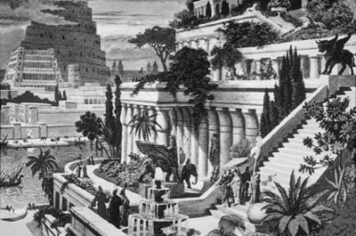

Mezopotamya bölgesindeki Babil yakınlarında, büyükçe bir gölde Derketo adında kadın yüzlü, balık gövdeli halim selim güzel bir tanrıça yaşıyordu. Kimseler de onu bilmiyor, tanımıyordu... Ne var ki evren güzeli tanrıça Afrodit; Derketo'nun gerek soyluluğunu gerekse güzellikten yana kendine olan güvenini çok kıskanıyordu... O yüzden bu sessiz tanrıçanın rahatını kaçırmak için, onun yüreğine en yakıcı aşk okları gönderdi yaramaz Eros aracılığıyla; ölümlü bir çobana deli divane âşık etti onu... Artık duygularını ne denli gemlemeye çalıştıysa da elinden bir şey gelmeyen tanrıça Derketo, çılgınca vurulduğu bu çobanla birlikte yaşamaya başladı... Bir süre sonra da nur topu gibi güzel mi güzel bir kız çocukları dünyaya geldi. Ama gene de Derketo, ölümlü bir dünyalıyla birlikte yaşamayı tanrıçalık onuruna yakıştıramıyordu... Bu arada bazı tanrıçaların kendisini kınamasına, bazılarının da alaya almasına artık dayanamaz oldu. Bu olumsuz duyguların çok ağır bastığı bir gün, çoban sevgilisini bırakıp kaçtı... Ondan olan kız çocuğunu da dağ başındaki bir kayalığa bıraktı... Sonra da o yöredeki başka bir ıssız gölde, ölümlü insanlardan uzak, eski tanrıçalık yaşamına geri döndü...
Tanrıça Derketo'nun dağ başına bıraktığı bu öksüz ve güzel bebeği, o yörenin ak güvercinleri bir ana gibi sıcak kanatları altına aldılar hemen. Onu en iyi şekilde büyütmek için yakınlardaki ülke kralının mandırasından aşırdıkları peynir, süt gibi yiyeceklerle beslemeye başladılar... Ne var ki orada çalışanlar da, güvercinlerin sık sık aşırmaya başladıkları süt ürünlerini nereye götürdüklerini görmek istediler. Hırsız güvercinlerin izini sürdüler. Sonunda onların dağ başında bırakılmış bir bebeğe analık ettiklerini gördüler. Gördüklerinden çok etkilenen mandıra emekçileri, bu güzel bebeği kaptıkları gibi doğruca çiftliğe getirdiler ve ona, "güvercinlerin beslemesi" anlamına gelen Semiramis adını verdiler... Mandıra çalışanlarının karşılıksız sevgisiyle de doyurulup okşanan bebek tez serpilip büyüdü; kısa sürede güzeller güzeli bir genç kız olup çıktı...
Günlerden bir gün mandırayı denetlemeye geldi kralın yakışıklı kâhyası. Ve kısa sürede bu güzeller güzeli yeni yetme Semiramis'le içli dışlı oldu. Birbirlerini çok sevdiler... Mandıra emekçilerinin düzenledikleri şen şakrak düğün eğlenceleriyle de dünya evine girdiler. Bir süre sonra bu mutlu çiftin bir de oğlan çocukları oldu... Semiramis artık kocasını başarıya götürecek her konuda yardımcı oluyordu. Ne var ki bu mutlu yuvaları, yeniden tanrıça Afrodit'in kıskançlığını körüklemekte gecikmedi!.. Çünkü Semiramis'in anası Derketo'ya olan eski olumsuz duygularını da unutmuş değildi...
Semiramis'in çocuğu yeni yetmelik çağına geldiği sıralarda yaşadıkları ülkenin kralı Ninos; iki köy arasındaki bir aile kavgasını öne sürerek bugünkü İran sınırları içinde bulunan Baktriya krallığına savaş açtı. Kralın gizli amacı o ülkenin hazinelerine el koymak ve güzel kızları-kadınları köle olarak devşirip getirmekti... Semiramis'in kocası da bu savaşa katılmak zorunda kaldı... Ama başvurduğu bütün savaş hilelerine karşın kral Ninos'un elinden bir şey gelmiyor; işgale uğrayan ülke direndikçe direniyor; savaş uzadıkça uzuyordu. Bunun üzerine kralın kâhyası, özlemine dayanamadığı karısı Semiramis'i yanına getirtti. Çok zeki ve becerikli olan Semiramis, Baktriya krallığının düşmeyen ve direnen kalesini ele geçirmek için kurduğu şeytanca bir tuzaktan söz etti kocasına. Kocası da bu tuzak önerisini krala iletti. Öneriyi çok beğenen kral gereğinin yapılması buyruğunu verdi...
Bu öneri uyarınca Semiramis; hasım ordular düz ovada savaşırlarken, yanına aldığı askerlerin de yardımıyla savaştıkları ülkeyi çevreleyen surlardaki kulelerden birine tırmanmayı başardı. Böylece kuleden yönlendirdiği savaşı, kralın istediği gibi sonuçlandırdı! Bu başarıdan sonra Semiramis; kral Ninos'un ilgisini ve hayranlığını kazandı hemen. Çok geçmeden de onu kraliçe olarak sarayına almaya karar verdi. Kral, kocası olan kâhyayla konuştu; Semiramis'i boşayıp kendisine bırakması karşılığında kendi kız kardeşini vermeyi önerdi ona. Bu öneriyi kabul etmezse onu öldüreceğini söyledi açık açık. Karısı Semiramis'i çok seven kâhya, krala hayır dedi ve kendi canına kıydı!..
Zorla kralın karısı olan Semiramis'in bir oğlu oldu bu evlilikten. Bir süre sonra kocası kral Ninos ölünce de kraliçe olarak onun tahtına kuruldu... Bu çok zeki ve becerikli kraliçe Semiramis, ülkesi Babil'de, kraliçelik onurunu okşayan, düşlerindeki cennete özgü pek çok konak, tapınak yaptırdı. Gene dillere destan Babil'deki "Asma Bahçeler" de onun yapıtları arasına girdi... Geçmişin ünlü ozanları, bu Asma Bahçeler'i ballandıra ballandıra anlatmaktan hiç bıkmadılar. Semiramis'in kendi ün ve kişisel tutkusu uğruna yaptırdığı saray ve tapınakların dışında, halkının mutluluğu için ne gibi yapılar kurdurduğu ve yasalar getirdiği konusunda fazla bir şey bilinmiyordu. Daha doğrusu o hep komşu ülkelere yağma ve talan seferlerine çıkıyor; ününe ün, malına mal eklemeye çalışıyordu. Bir gün insan dostu tanrılar; gene komşu ülkelere talan ve sömürü amacıyla sefere çıktığında, oğlunun tahtına el koyacağı haberini ilettiler Semiramis'e... Bu uyarının amacı onu savaşlardan caydırmaktı... Ne var ki o bu uyarılara hiç aldırmadı! Zaptettiği ülkelerde kendi damgasını taşıyan anıtlar diktirmeyi, hanlar, konaklar, tapınaklar kurdurmayı sürdürdü hep... Bir keresinde ta Hindistan'a dek gitti... Mısır'ın baştanrısı Ammon'la konuştu... Bu arada büyük bir tanrıçaya dönüşme düşleri kurmaya başladı. Ne var ki geçen yıllar içinde aralıksız sürdürdüğü o uzun menzilli talan savaşları sonunda haliyle çok yorgun düştü ve hastalandı...

Babil'in Asma Bahçeleri
Artık döşeğinde son demlerini yaşayan yorgun Semiramis, hiç tanımadığı ve kendisini dağ başlarında terk eden anası tanrıça Derkote'yi düşündü içi burkularak... Sonra da kendisine Semiramis adını verdiren o ak güvercinler uçuşmaya başladı gözlerinin önünde... Anadolu'nun sevgi yüklü o adsız ve gani gönüllü güvercinleri ona analık etmiş; çaldıkları peynir, yoğurtla besleyip ölümden döndürmüşlerdi onu... Ama kendisi çok yanlış bir yolda, şu anda hiç benimsemediği anlamsız güzergâhlarda koşuşturmuştu hep... "Savaştan savaşa koşmak, insanları boğup onları talanlamak, taht ve tapınaklar kurmak yerine, bir zamanlar beni besleyen ve kurtaran güvercinler gibi, Mezopotamya'daki acılı halkın bir güvercini olabilseydim keşke!" diye hayıflandı içi yana yana... Ama artık her şey için çok geçti...
Onun bu üzüntüsünü anında duyan tanrıça Afrodit, Semiramis'e çok acıdı; onu sevgiyle anlamaya çalıştı bu kez. Ve bu Akdenizli, yufka yürekli güzel tanrıça Afrodit; dünyanın en zengin ve verimli ülkesi Mezopotamya'nın dağlarında ovalarında durmadan dolanan, bembeyaz bir güvercine dönüştürüverdi onu... Ve Semiramis hemen kanatlanıp dağlar bayırlar aştı; ülkesi Mezopotamya'ya döndü...
Mezopotamyalı bu ak güvercinin, oralarda hâlâ acılı ve umarsız yaşayan ve yazgıları hiç değişmemiş insanlarından utanan, mahzun bir güvercin olduğu da kesindi...